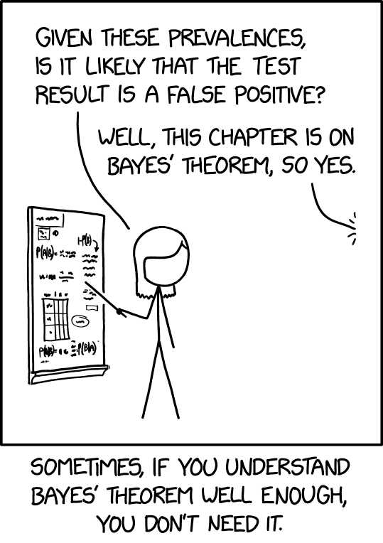

Il teorema di Bayes#
Obiettivi di apprendimento
Dopo aver completato questo capitolo, acquisirete le competenze per:
Capire in profondità il teorema di Bayes e la sua importanza.
Utilizzare il teorema di Bayes per analizzare e interpretare i test diagnostici, tenendo in considerazione la prevalenza della malattia in questione.
Affrontare e risolvere problemi di probabilità discreta che necessitano dell’applicazione del teorema di Bayes.
In questo capitolo esploreremo il teorema di Bayes, un fondamentale risultato della teoria delle probabilità che ci permette di calcolare le probabilità a posteriori di eventi ipotetici, dati i loro valori a priori e nuove informazioni. In altre parole, ci consente di aggiornare razionalmente le nostre conoscenze alla luce di nuove evidenze. Prima di procedere con il presente capitolo, è essenziale leggere l’appendice Per liberarvi dai terrori preliminari.
Preparazione del Notebook#
import numpy as np
import pandas as pd
import matplotlib as mpl
import matplotlib.pyplot as plt
import arviz as az
import seaborn as sns
%config InlineBackend.figure_format = 'retina'
RANDOM_SEED = 42
rng = np.random.default_rng(RANDOM_SEED)
az.style.use("arviz-darkgrid")
Dimostrazione e Applicazioni#
Supponiamo di avere una partizione dell’evento certo \(\Omega\) in due soli eventi mutuamente esclusivi, che chiamiamo ipotesi \(H_1\) e \(H_2\). Supponiamo inoltre di conoscere le probabilità a priori \(P(H_1)\) e \(P(H_2)\) delle due ipotesi. Consideriamo ora un terzo evento \(E\), con probabilità non nulla, di cui conosciamo le probabilità condizionate \(P(E \mid H_1)\) e \(P(E \mid H_2)\), ovvero la probabilità che si verifichi l’evento \(E\) dati i valori delle due ipotesi. Supponendo che si sia verificato l’evento \(E\), vogliamo conoscere le probabilità a posteriori delle ipotesi, ovvero \(P(H_1 \mid E)\) e \(P(H_2 \mid E)\).
La figura seguente rappresenta una partizione dell’evento certo in due eventi chiamati ‘ipotesi’ \(H_1\) e \(H_2\). L’evidenza \(E\) è un sottoinsieme dello spazio campione.

Per trovare la probabilità dell’ipotesi 1 data l’evidenza osservata, scriviamo:
Possiamo sostituire \(P(E \cap H_1)\) con \(P(E \mid H_1)P(H_1)\) data la definizione di probabilità condizionata \(P(E \mid H_1) = \frac{P(E \cap H_1)}{P(H_1)}\). Così facendo l’equazione precedente diventa:
Poiché \(H_1\) e \(H_2\) sono eventi disgiunti, la probabilità dell’evento \(E\) può essere calcolata utilizzando il teorema della probabilità totale:
Sostituendo questi risultati nella formula di Bayes, otteniamo:
Questa equazione rappresenta il caso più elementare della formula di Bayes, applicabile quando l’insieme delle ipotesi è composto unicamente da due eventi mutualmente esclusivi, \(H_1\) e \(H_2\).
Nel contesto delle probabilità discrete, è possibile estendere questa formula al caso generale dove le ipotesi formano una partizione completa dell’evento certo \(\Omega\), e \(E\) è un sottinsieme di \(\Omega\) con probabilità non nulla, \(P(E) > 0\). In tale scenario, per ogni \(i\) appartenente all’insieme dei numeri naturali (da 1 all’infinito), la formula di Bayes si generalizza come segue:
Qui, \((H_i)_{i\geq 1}\) rappresenta la partizione dell’evento certo \(\Omega\), e la formula calcola la probabilità a posteriori di ciascuna ipotesi \(H_i\) dati l’evidenza \(E\) e le probabilità a priori delle ipotesi. Il denominatore serve come fattore normalizzante, sommando il prodotto delle probabilità a priori delle ipotesi e le rispettive verosimiglianze su tutte le ipotesi possibili.
Quando \(H_i\) rappresenta una variabile continua (per esempio, il valore di un parametro all’interno di un modello statistico), la somma presente al denominatore nella formula di Bayes viene sostituita da un integrale, come mostrato di seguito:
In questa espressione, \(P(H_i \mid E)\) indica la probabilità a posteriori dell’ipotesi \(H_i\) condizionata dall’evidenza \(E\); \(P(E \mid H_i)\) rappresenta la verosimiglianza di \(E\) assumendo vera l’ipotesi \(H_i\); mentre \(P(H_i)\) denota la probabilità a priori dell’ipotesi \(H_i\). Il denominatore, caratterizzato dall’integrale sulle possibili ipotesi \(H\), rappresenta la verosimiglianza marginale, ovvero una misura che considera la media della verosimiglianza attraverso tutte le possibili ipotesi.
Interpretazione della Formula di Bayes#
Nella formula di Bayes generalizzata, possiamo distinguere tre componenti chiave che facilitano la comprensione e l’applicazione del teorema in vari ambiti:
Probabilità a Priori, \(P(H)\): Questo termine esprime la nostra valutazione iniziale della plausibilità dell’ipotesi \(H\) prima di considerare le nuove evidenze \(E\). In pratica, riflette il nostro grado di convinzione o fiducia nell’ipotesi basato su conoscenze pregresse o su assunzioni razionali.
Probabilità a Posteriori, \(P(H \mid E)\): Questa probabilità rappresenta la revisione della nostra fiducia nell’ipotesi \(H\) a seguito dell’osservazione dell’evidenza \(E\). Detta in termini più semplici, è il grado di fiducia aggiornato in \(H\) dopo aver preso in considerazione l’evidenza. Il teorema di Bayes ci fornisce un meccanismo formale per aggiustare questa probabilità in base alle nuove informazioni acquisite.
Verosimiglianza, \(P(E \mid H)\): Questo termine indica quanto è probabile osservare l’evidenza \(E\) assumendo che l’ipotesi \(H\) sia vera. Serve a quantificare il grado di supporto o conferma che l’evidenza apporta all’ipotesi. Una verosimiglianza elevata suggerisce che l’evidenza è altamente compatibile o attesa sotto l’ipotesi considerata.
Il teorema di Bayes si rivela uno strumento potente per l’aggiornamento delle nostre credenze alla luce di nuove informazioni, facilitando un approccio dinamico alla gestione della conoscenza e delle incertezze. È di particolare importanza nelle interpretazioni soggettive della probabilità, offrendoci una metodologia rigorosa per ricalibrare le nostre convinzioni sull’ipotesi \(H\) in risposta a nuovi dati o evidenze \(E\). Questo processo di rielaborazione delle credenze si dimostra fondamentale in svariati settori, tra cui l’intelligenza artificiale, la statistica, le scienze naturali e le scienze sociali, consentendoci di elaborare decisioni meglio informate, interpretare con maggiore acume i dati a nostra disposizione e migliorare significativamente le nostre previsioni e comprensioni.
Alcuni esempi#
Stimare il genere in base alla lunghezza dei capelli#
Consideriamo il caso in cui osserviamo una persona con i capelli lunghi e desideriamo valutare la probabilità che questa persona sia femminile. In termini formali, definiamo \(H = \text{"donna"}\) e \(E = \text{"capelli lunghi"}\), e miriamo a stimare \(P(H \mid E)\).
Le nostre conoscenze preliminari includono:
La probabilità a priori che la persona osservata sia una donna, \(P(H) = 0.5\),
La probabilità generale di osservare qualcuno con i capelli lunghi, \(P(E) = 0.4\),
La probabilità di avere i capelli lunghi dato che la persona è una donna, \(P(E \mid H) = 0.7\).
Applicando la formula di Bayes, possiamo determinare:
Questo risultato ci mostra che, alla luce delle informazioni a nostra disposizione, la probabilità che una persona con i capelli lunghi sia una donna è dell’0.875. In altre parole, prima di osservare l’evidenza (i capelli lunghi), partivamo da una conoscenza di base secondo cui c’era una chance su due (50%) che la persona fosse una donna. Dopo aver considerato l’evidenza dei capelli lunghi, abbiamo aggiornato la nostra stima alla probabilità “a posteriori” di 0.875, riflettendo così un incremento della nostra convinzione che la persona sia una donna basandoci su quest’ultima osservazione.
Mammografia per il Rilevamento del Cancro al Seno#
Un esempio pratico che illustra efficacemente l’uso del teorema di Bayes è l’analisi del rapporto tra la mammografia e la diagnosi del cancro al seno, già considerato in precedenza. In questo contesto, si considerano due ipotesi: la presenza della malattia, indicata con \(M^+\), e l’assenza della malattia, denotata con \(M^-\). L’evidenza in questo caso è rappresentata dal risultato positivo di un test di mammografia, che indicheremo con \(T^+\). Applicando la formula di Bayes, possiamo esprimere la probabilità di avere il cancro al seno dato un risultato positivo al test come segue:
dove:
\(P(M^+ \mid T^+)\) è la probabilità di avere il cancro (\(M^+\)) dato un risultato positivo al test (\(T^+\)),
\(P(T^+ \mid M^+)\) rappresenta la probabilità che il test di mammografia risulti positivo (\(T^+\)) in presenza effettiva del cancro (\(M^+\)),
\(P(M^+)\) denota la probabilità a priori che una persona abbia il cancro prima di sottoporsi al test,
\(P(T^+ \mid M^-)\) indica la probabilità che il test risulti positivo (\(T^+\)) nonostante l’assenza del cancro (\(M^-\)); dal momento che la specificità è data e uguale a 0.9, possiamo calcolare la probabilità di un falso positivo come segue:
\[ P(T^+ \mid M^-) = 1 - \text{Specificità} = 1 - 0.9 = 0.1. \]Quindi, in questo contesto, \(P(T^+ \mid M^-) = 0.1\) significa che c’è un 10% di probabilità che il test diagnostichi erroneamente la presenza del cancro in una persona sana.
\(P(M^-)\) rappresenta la probabilità a priori che una persona non sia affetta da cancro prima di effettuare il test.
Inserendo i valori specifici del contesto analizzato otteniamo:
Questo calcolo dimostra che, considerando una mammografia con risultato positivo ottenuta tramite un test con una sensibilità del 90% e una specificità del 90%, la probabilità che il paziente sia effettivamente affetto da cancro al seno è approssimativamente dell’8.3%.
Il Valore Predittivo di un Test di Laboratorio#
L’applicazione del teorema di Bayes nell’interpretazione dei risultati dei test di laboratorio è cruciale nella pratica clinica. Questo teorema consente di calcolare la probabilità che un individuo sia affetto da una specifica malattia dopo un risultato positivo al test, nonché la probabilità di non essere malati in caso di esito negativo. La comprensione di tre elementi è fondamentale per questo calcolo: la prevalenza della malattia, la sensibilità e la specificità del test.
Prevalenza: Si riferisce alla percentuale di individui in una popolazione che sono affetti da una certa malattia in un determinato momento. Viene espressa come percentuale o frazione della popolazione. Per esempio, una prevalenza del 0.5% indica che su mille persone, cinque sono affette dalla malattia.
Sensibilità: Indica la capacità del test di identificare correttamente la malattia negli individui malati. Viene calcolata come la frazione di veri positivi (individui malati correttamente identificati) sul totale degli individui malati. La formula della sensibilità (\(Sens\)) è la seguente:
\[ Sens = \frac{TP}{TP + FN}, \]dove \(TP\) rappresenta i veri positivi e \(FN\) i falsi negativi. Pertanto, la sensibilità misura la probabilità che il test risulti positivo se la malattia è effettivamente presente.
Specificità: Misura la capacità del test di riconoscere gli individui sani, producendo un risultato negativo per chi non è affetto dalla malattia. Si calcola come la frazione di veri negativi (individui sani correttamente identificati) sul totale degli individui sani. La specificità (\(Spec\)) si definisce come:
\[ Spec = \frac{TN}{TN + FP}, \]dove \(TN\) sono i veri negativi e \(FP\) i falsi positivi. Così, la specificità rappresenta la probabilità che il test risulti negativo in assenza della malattia.
Questa tabella riassume la terminologia:
\(T^+\) |
\(T^-\) |
Totale |
|
|---|---|---|---|
\(M^+\) |
\(P(T^+ \cap M^+)\) |
\(P(T^- \cap M^+)\) |
\(P(M^+)\) |
\(M^-\) |
\(P(T^+ \cap M^-)\) |
\(P(T^- \cap M^-)\) |
\(P(M^-)\) |
Totale |
\(P(T^+)\) |
\(P(T^-)\) |
1 |
dove \(T^+\) e \(T^-\) indicano rispettivamente un risultato positivo o negativo del test, mentre \(M^+\) e \(M^-\) la presenza o assenza effettiva della malattia. In questa tabella, i totali marginali rappresentano:
Totale per \(M^+\) e \(M^-\) (ultima colonna): La probabilità totale di avere la malattia (\(P(M^+)\)) e la probabilità totale di non avere la malattia (\(P(M^-)\)), rispettivamente. Questi valori sono calcolati sommando le probabilità all’interno di ciascuna riga.
Totale per \(T^+\) e \(T^-\) (ultima riga): La probabilità totale di un risultato positivo al test (\(P(T^+)\)) e la probabilità totale di un risultato negativo al test (\(P(T^-)\)), rispettivamente. Questi valori sono calcolati sommando le probabilità all’interno di ciascuna colonna.
Totale generale (angolo in basso a destra): La somma di tutte le probabilità, che per definizione è 1, rappresentando l’intera popolazione o il set di casi considerati.
Mediante il teorema di Bayes, possiamo usare queste informazioni per stimare la probabilità post-test di avere o non avere la malattia basandoci sul risultato del test, fornendo così una base razionale per decisioni diagnostiche e terapeutiche.
La probabilità post-test che un individuo sia malato dato un risultato positivo del test è calcolata come:
Questa formula rappresenta il valore predittivo positivo, indicando la probabilità che un individuo sia realmente malato se il test è positivo. Analogamente, il valore predittivo negativo, che è la probabilità che un individuo non sia malato dato un risultato negativo del test, si calcola come:
Questi valori predittivi sono essenziali per valutare l’efficacia di un test diagnostico, aiutando a determinare quanto sia affidabile un risultato positivo o negativo nel contesto di una specifica popolazione e malattia.
{kind=link}

Calcoliamo ora il valore predittivo del test positivo e il valore predittivo del test negativo per i dati dell’esempio sulla mammografia e cancro al seno.
def positive_predictive_value_of_diagnostic_test(sens, spec, prev):
return (sens * prev) / (sens * prev + (1 - spec) * (1 - prev))
Valore Predittivo Positivo (Positive Predictive Value, PPV): Questa misura indica la probabilità che un individuo sia effettivamente malato se ha ricevuto un risultato positivo al test. La formula che hai fornito per il PPV è:
Qui, sens rappresenta la sensibilità del test, spec la specificità, e prev la prevalenza della malattia nella popolazione. La formula riflette il calcolo del PPV basato sul teorema di Bayes.
def negative_predictive_value_of_diagnostic_test(sens, spec, prev):
return (spec * (1 - prev)) / (spec * (1 - prev) + (1 - sens) * prev)
Valore Predittivo Negativo (Negative Predictive Value, NPV): Questa misura indica la probabilità che un individuo non sia malato se ha ricevuto un risultato negativo al test. La formula per il NPV è:
Anche in questo caso, sens, spec, e prev hanno gli stessi significati menzionati sopra. Questa formula calcola il NPV basandosi sul teorema di Bayes.
Inseriamo i dati del problema.
sens = 0.9 # sensibilità
spec = 0.9 # specificità
prev = 0.01 # prevalenza
Il valore predittivo del test positivo è:
res_pos = positive_predictive_value_of_diagnostic_test(sens, spec, prev)
print(f"P(M+ | T+) = {round(res_pos, 3)}")
P(M+ | T+) = 0.083
Il valore predittivo del test negativo è:
res_neg = negative_predictive_value_of_diagnostic_test(sens, spec, prev)
print(f"P(M- | T-) = {round(res_neg, 3)}")
P(M- | T-) = 0.999
Consideriamo ora un altro esempio relativo al test antigenico rapido per il virus SARS-CoV-2, che può essere eseguito mediante tampone nasale, tampone naso-orofaringeo o campione di saliva. L’Istituto Superiore di Sanità ha pubblicato un documento il 5 novembre 2020, nel quale viene sottolineato che, fino a quel momento, i dati disponibili sui vari test sono quelli forniti dai produttori: la sensibilità varia tra il 70% e l’86%, mentre la specificità si attesta tra il 95% e il 97%.
Per fare un esempio, consideriamo i dati di un certo momento temporale. Nella settimana tra il 17 e il 23 marzo 2023, in Italia, il numero di individui positivi al virus è stato stimato essere di 138.599 (fonte: Il Sole 24 Ore). Questo dato corrisponde a una prevalenza di circa 0.2% su una popolazione totale di circa 59 milioni di persone.
prev = 138599 / 59000000
prev
0.002349135593220339
L’obiettivo è determinare la probabilità di essere effettivamente affetti da Covid-19, dato un risultato positivo al test antigenico rapido, ossia \(P(M^+ \mid T^+)\). Per raggiungere questo scopo, useremo la formula relativa al valore predittivo positivo del test.
sens = (0.7 + 0.86) / 2 # sensibilità
spec = (0.95 + 0.97) / 2 # specificità
res_pos = positive_predictive_value_of_diagnostic_test(sens, spec, prev)
print(f"P(M+ | T+) = {round(res_pos, 3)}")
P(M+ | T+) = 0.044
Pertanto, se il risultato del tampone è positivo, la probabilità di essere effettivamente affetti da Covid-19 è solo del 4.4%, approssimativamente.
Se la prevalenza fosse 100 volte superiore (cioè, pari al 23.5%), la probabilità di avere il Covid-19, dato un risultato positivo del tampone, aumenterebbe notevolmente e sarebbe pari a circa l’86%.
prev = 138599 / 59000000 * 100
res_pos = positive_predictive_value_of_diagnostic_test(sens, spec, prev)
print(f"P(M+ | T+) = {round(res_pos, 3)}")
P(M+ | T+) = 0.857
Se il risultato del test fosse negativo, considerando la prevalenza stimata del Covid-19 nella settimana dal 17 al 23 marzo 2023, la probabilità di non essere infetto sarebbe del 99.9%, approssimativamente.
sens = (0.7 + 0.86) / 2 # sensibilità
spec = (0.95 + 0.97) / 2 # specificità
prev = 138599 / 59000000 # prevalenza
res_neg = negative_predictive_value_of_diagnostic_test(sens, spec, prev)
print(f"P(M- | T-) = {round(res_neg, 3)}")
P(M- | T-) = 0.999
Tuttavia, un’esito del genere non dovrebbe sorprenderci, considerando che la prevalenza della malattia è molto bassa; in altre parole, il risultato negativo conferma una situazione già presunta prima di sottoporsi al test. Il vero ostacolo, specialmente nel caso di malattie rare come il Covid-19 in quel periodo specifico, non risiede tanto nell’asserire l’assenza della malattia quanto piuttosto nel confermarne la presenza.
Commenti e considerazioni finali#
La riflessione epistemologica contemporanea ha ribadito che la conoscenza non può essere vista come una certezza inconfutabile o una garanzia razionale di verità. Invece, essa emerge come una serie di decisioni prese all’interno di un contesto di incertezza. Questa comprensione è particolarmente pertinente nel campo della ricerca scientifica, dove né la logica deduttiva né le rigorose dimostrazioni matematiche sono sufficienti. Di conseguenza, la scienza necessita di una “logica dell’incertezza,” che è efficacemente fornita dalla teoria delle probabilità, e più specificamente, dal teorema di Bayes.
Il teorema di Bayes ci offre un framework per interpretare la probabilità come una valutazione soggettiva influenzata da diversi fattori condizionanti. In pratica, il teorema esprime la probabilità a posteriori \( P(H_i \mid E) \) come un risultato derivato dalla combinazione della probabilità a priori \( P(H_i) \) e della verosimiglianza \( P(E \mid H_i) \). Questa formulazione sottolinea che la nostra valutazione probabilistica di una data ipotesi \( H_i \) è modulata sia dall’evidenza empirica \( E \) che dalle nostre credenze a priori \( P(H_i) \).
Poiché la probabilità è una valutazione intrinsecamente soggettiva, è possibile che diversi osservatori arrivino a conclusioni differenti. Tuttavia, il teorema di Bayes fornisce un meccanismo razionale—conosciuto come “aggiornamento bayesiano”—per ricalibrare queste credenze in risposta a nuove informazioni o evidenze.
L’approccio bayesiano offre strumenti per valutare l’efficacia di diverse strategie di trattamento o interventi in psicologia clinica. Per esempio, se si afferma che la meditazione mattutina è efficace nel trattamento della depressione, è essenziale valutare questa affermazione nel contesto di tutte le evidenze disponibili, compresi i casi in cui la meditazione non ha portato a miglioramenti.
In sintesi, la metodologia bayesiana fornisce una cornice robusta per l’aggiornamento delle probabilità in presenza di nuove informazioni, offrendo spunti importanti sia per la ricerca che per la pratica clinica in psicologia.
Nel contesto di questo capitolo, abbiamo focalizzato la nostra discussione sul teorema di Bayes nel caso delle variabili casuali discrete. Tuttavia, nel prossimo capitolo, esploreremo come il teorema può essere applicato in modo più intuitivo alle variabili casuali continue. Per ulteriori dettagli, si rimanda al notebook Modellazione bayesiana.
Watermark#
%load_ext watermark
%watermark -n -u -v -iv -w -m
Last updated: Thu Mar 28 2024
Python implementation: CPython
Python version : 3.11.8
IPython version : 8.22.2
Compiler : Clang 16.0.6
OS : Darwin
Release : 23.4.0
Machine : x86_64
Processor : i386
CPU cores : 8
Architecture: 64bit
matplotlib: 3.8.3
numpy : 1.26.4
pandas : 2.2.1
seaborn : 0.13.2
arviz : 0.17.1
Watermark: 2.4.3